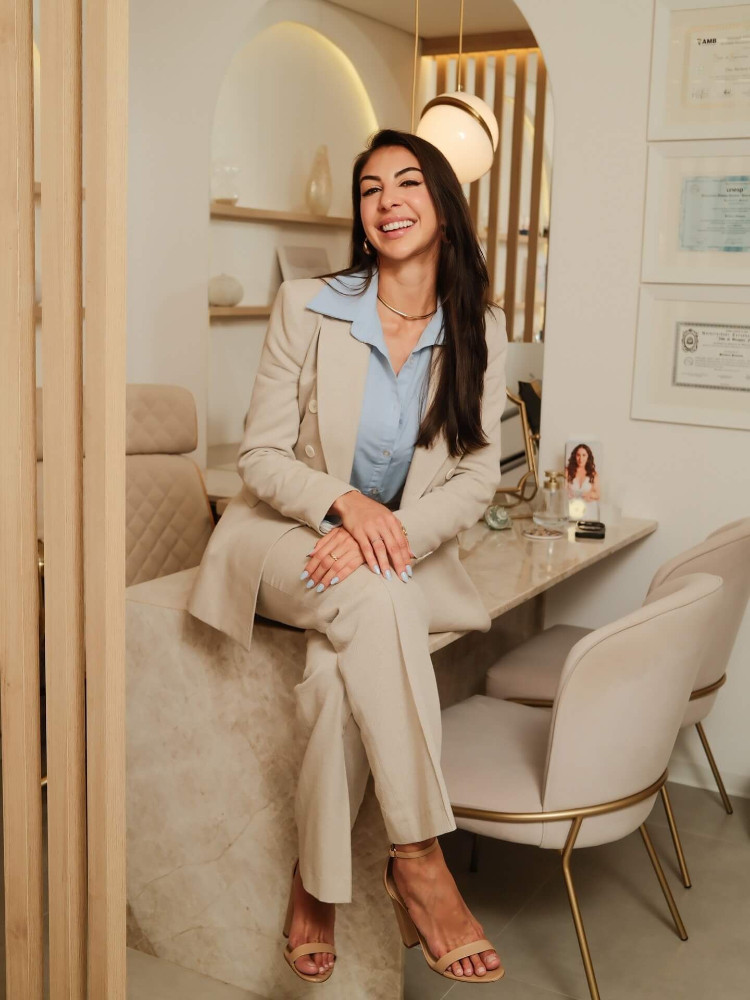

A Dra. Bárbara Pimenta realiza lifting facial com Liftera 2 — tecnologia coreana de ultrassom microfocado que define contorno, reduz flacidez e reposiciona tecidos sem cortes, sem anestesia e sem afastamento.
Com o tempo, o rosto perde a definição que o caracterizava. A queda de colágeno, a redistribuição de gordura e a perda de sustentação dos tecidos reescrevem o contorno facial de forma progressiva.
01
Queda do contorno facial
A linha da mandíbula perde definição. A região do jowl desce e cria um aspecto "pesado" na parte inferior do rosto, alterando a harmonia do perfil.
02
Flacidez de bochechas
A pele da região malar perde sustentação e desce, acentuando sulcos e tornando o rosto visivelmente mais envelhecido mesmo sem mudança de peso.
03
Ptose da sobrancelha
Com o envelhecimento, a sobrancelha tende a cair levemente, tornando o olhar mais fechado e cansado — uma alteração notada com frequência a partir dos 35 anos.
Queda de colágeno após os 25 anos
Redução gradual de ~1% ao ano
Perda de sustentação tecidual
Acentuada na região malar e cervical
Região mais afetada
Terço médio e inferior do rosto
Dados de referência dermatológica — variações individuais conforme biotipo e hábitos.
Como funciona
O procedimento em três etapas
Sem internação, sem cortes. A tecnologia microfocada atua com precisão nas camadas que sustentam o rosto.
01
Avaliação médica individualizada
A Dra. Bárbara avalia o contorno facial, o grau de flacidez e suas expectativas. Só então define se o Liftera 2 é indicado e qual protocolo de profundidade e energia faz sentido para o seu caso.
02
Sessão de 30 a 45 minutos
O transdutor emite ultrassom microfocado em pontos precisos das camadas profundas do rosto. A tecnologia de segunda geração do Liftera 2 é mais confortável que o HIFU convencional.
03
Evolução progressiva
A estimulação de colágeno e a resposta tecidual ocorrem nas semanas seguintes à sessão. A resposta é individual — varia conforme biotipo, protocolo e características clínicas de cada paciente.
Indicações
Áreas tratadas com Liftera 2
Protocolo definido individualmente na avaliação — cada área tem parâmetros específicos de energia e profundidade.
Terço inferior
Mandíbula e jowl
Indicado para redefinição do contorno mandibular e tratamento da ptose do jowl. A precisão do ultrassom microfocado permite atuação em camadas específicas sem comprometer a superfície.
Terço médio
Bochechas e malar
Tratamento da flacidez da região malar. Estimula colágeno e sustentação na área que mais influencia a percepção de jovialidade do rosto.
Terço superior
Sobrancelha e testa
Protocolo específico para ptose leve da sobrancelha. Atua de forma não invasiva na região supraorbital — área delicada com parâmetros próprios.
Pescoço
Pescoço e colo
Flacidez cervical e do décolleté. O Liftera 2 é indicado para casos de flacidez moderada na região do pescoço com protocolo adaptado à delicadeza local.
Contorno total
Lifting facial completo
Protocolo integrado para múltiplas áreas do rosto em uma única sessão — resultado harmonioso sem aspecto artificial. Indicação e protocolo definidos na avaliação.
Papada
Região submental
Para casos de flacidez submandibular e papada incipiente. O microfoco permite atuação precisa sem necessidade de cirurgia ou afastamento.
Avaliações
O que dizem as pacientes
Relatos de pacientes atendidas pela Dra. Bárbara — publicados sem adjetivos que insinuem promessa de resultado.
★★★★★
Fui muito bem atendida. A Dra. Bárbara explicou cada etapa do procedimento com clareza, tirou todas as minhas dúvidas e me deixou confortável em todo o processo.
Fernanda L., 47 anos
Avaliação via Google
★★★★★
Profissional muito atenciosa e cuidadosa. Me sentei insegura e saí com todas as dúvidas respondidas. A avaliação foi detalhada e o atendimento foi excelente do início ao fim.
Carla M., 43 anos
Avaliação via Google
★★★★★
A Dra. Bárbara foi extremamente técnica e humanizada. Explicou o procedimento com detalhes, apresentou as expectativas reais e acompanhou de perto após a sessão. Recomendo.
A tecnologia de segunda geração do Liftera 2 foi desenvolvida para ser mais confortável do que o HIFU convencional. A maioria das pacientes descreve a sensação como formigamento ou calor pontual — tolerável sem anestesia na maior parte dos casos. Em áreas mais sensíveis, anestésico tópico pode ser aplicado. A Dra. Bárbara ajusta os parâmetros durante a sessão.
Varia conforme o caso — grau de flacidez, áreas a tratar, biotipo e expectativas. A maioria dos protocolos envolve 1 sessão por ciclo, com reavaliação periódica. A Dra. Bárbara define o protocolo na avaliação sem indicar procedimentos além do necessário para cada caso.
A resposta é progressiva e individual. Alterações podem ser observadas a partir de semanas após o procedimento, com evolução continuada por meses — conforme o organismo responde ao estímulo de colágeno. A resposta varia por biotipo, idade e protocolo aplicado.
Ambos utilizam tecnologia HIFU para agir nas camadas profundas da pele sem cirurgia. O Liftera 2 tem maior foco em precisão facial e é desenvolvido pela Classys (Coreia), com ênfase no conforto da sessão. O Ultraformer MPT usa Multi Pulse Technology e tem maior versatilidade para face e corpo. A Dra. Bárbara avalia qual tecnologia é mais adequada para cada caso na consulta.
Não. A maioria das pacientes retorna às atividades normais no mesmo dia. Pode haver leve vermelhidão ou sensibilidade local nas primeiras horas — transitórios e sem interferência na rotina. Não há curativos, afastamento ou repouso obrigatório.
A consulta é realizada pela própria Dra. Bárbara. Ela analisa sua indicação, apresenta o protocolo adequado e responde todas as dúvidas para que você tome a decisão com segurança. Para agendar, envie uma mensagem pelo WhatsApp.

A especialista
Dra. Bárbara Pimenta
Dermatologista com formação pela UNESP Botucatu e Título de Especialista pela Sociedade Brasileira de Dermatologia. Especializada em Dermatologia Clínica, Cirúrgica e Estética.
Graduação e Residência em Dermatologia — UNESP, Faculdade de Medicina de Botucatu
Título de Especialista — Sociedade Brasileira de Dermatologia (SBD)
Pós-Graduação em Dermatologia Integrativa em curso · atualização contínua em tecnologias estéticas
CRM/SC 27312 · RQE 17648 — Registro ativo no CRM de Santa Catarina